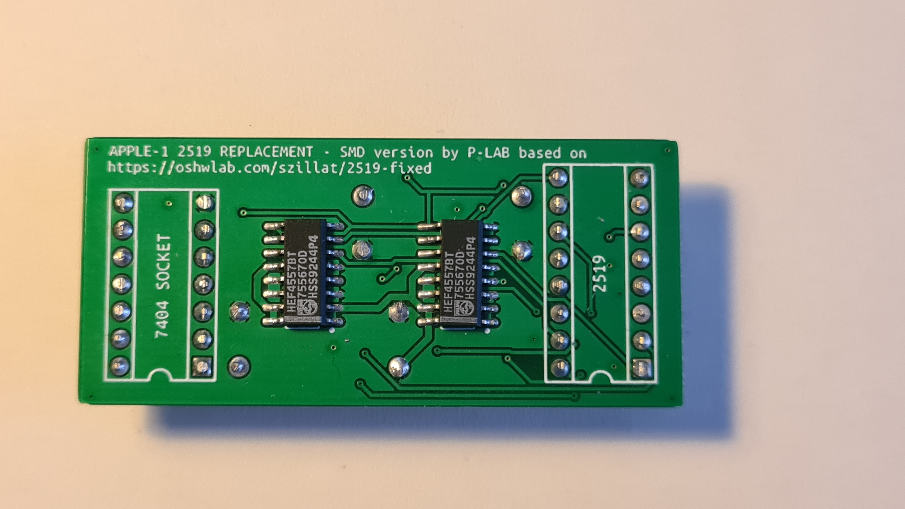
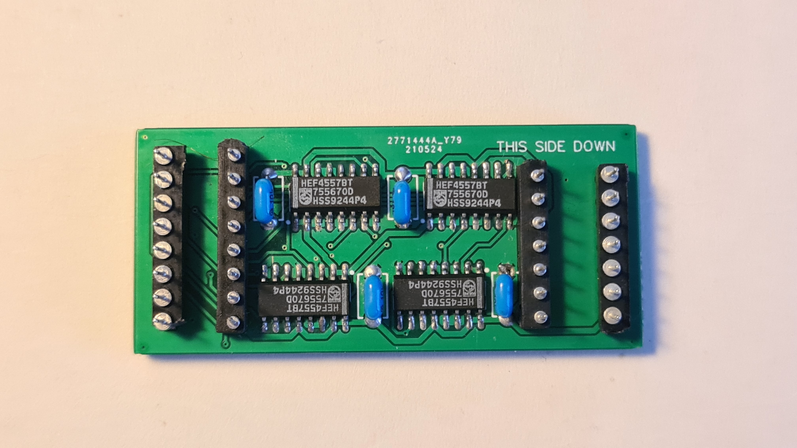

APPLE-1 2519 SMD Replacement
 Apple-1 2519 (Shift Register) Original Project page [external link]:
https://oshwlab.com/szillat/2519-fixedDocuments hosted here:
--- GERBER for Apple-1 2519 Replacement - ALL SMD [gerber/zip]
--- GERBER for Apple-1 2519 Replacement - SMD, with traditional 100 nF capacitors [gerber/zip]